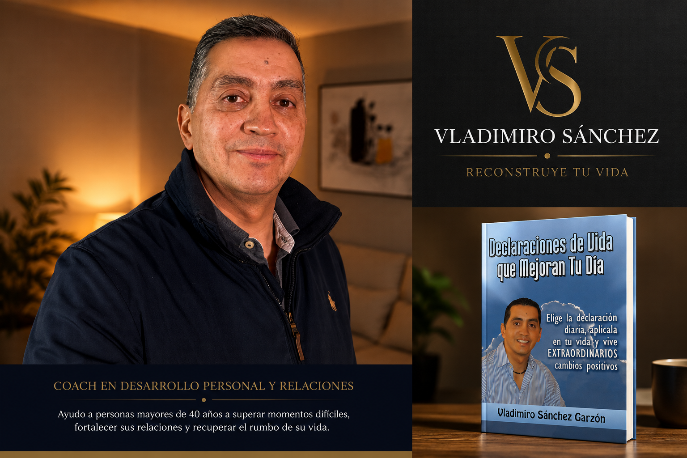

Hay situaciones que te apagan.
Pero ninguna tiene el poder de decidir quién serás mañana.
Acompaño a personas mayores de 40 años que desean reconstruir su vida, fortalecer sus relaciones y recuperar su propósito.

+40
Años de experiencia de vida
❤️
Relaciones más fuertes
🎯
Propósito y crecimiento personal
No puedo cambiar tu pasado. Pero puedo ayudarte a construir un futuro diferente.
Soy Vladimiro Sánchez. Creo firmemente que nunca es tarde para reconstruir una vida, recuperar una relación o volver a encontrar el propósito. Durante años he acompañado a personas que sentían que habían perdido el rumbo. Hoy mi misión es ayudarte a descubrir que todavía puedes escribir un nuevo capítulo.
Conoce mi historiaCada proceso comienza con una decisión.
Relaciones de Pareja
Aprende a reconstruir la comunicación, recuperar la confianza y fortalecer tu relación.
Crecimiento Personal
Descubre nuevas herramientas para superar bloqueos y avanzar hacia la vida que deseas.
Propósito de Vida
Encuentra claridad para tomar decisiones y construir un futuro con sentido.
Declaraciones de Vida que Mejoran Tu Día
Un libro pensado para ayudarte a cambiar la manera en que hablas contigo mismo, fortalecer tu actitud y comenzar cada día con esperanza y propósito.
Comprar en AmazonHistorias de personas que decidieron cambiar.
"Comprendí que todavía podía reconstruir mi vida. Hoy tomo decisiones con más tranquilidad y seguridad."
— Cliente
"Aprendí a comunicarme mejor con mi pareja y a recuperar la confianza que habíamos perdido."
— Cliente
"El proceso me ayudó a descubrir que nunca es tarde para empezar de nuevo."
— Cliente
Empieza hoy a reconstruir tu vida.
Estoy aquí para acompañarte en tu proceso.